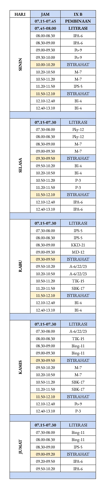

Musik :
Jadwal kelas 9B :

Text Edition....
Senin :
07.15 - 07.45 : Pembinaan
07.45 - 08.00 : Literasi
08.00 - 09.00 : IPA
09.00 - 10.00 : PJOK
10.00 - 10.20 : Istirahat
10.20 - 11.20 : MTK
11.20 - 11.50 : IPS
11.50 - 12.10 : Istirahat
12.10 - 13.10 : Bahasa Indonesia.
Selasa :
07.15 - 07.30 : Literasi
07.30 - 08.30 : Prakarya
08.30 - 09.30 : MTK
09.30 - 09.50 : Istirahat
09.50 - 10.50 : Bahasa Indonesia
10.50 - 11.50 : PPKN
11.50 - 12.10 : Istirahat
12.10 - 13.10 : IPA
Rabu :
07.15 - 07.30 : Literasi
07.30 - 08.30 : IPS
08.30 - 09.00 : KKD
09.00 - 09.30 : Mandarin
09.30 - 09.50 : Istirahat
09.50 - 10.50 : Agama / Budi Pekerti
10.50 - 11.20 : TIK
11.20 - 11.50 : SBK
11.50 - 12.10 : Istirahat
12.10 - 13.10 : BI
Kamis :
07.15 - 07.30 : Literasi
07.30 - 08.00 : Agama / Budi Pekerti
08.00 - 08.30 : TIK
08.30 - 09.30 : Bahasa Inggris
09.30 - 09.50 : Istirahat
09.50 - 10.50 : Mandarin
10.50 - 11.50 : SBK
11.50 - 12.10 : Istirahat
12.10 - 12.40 : PJOK
12.40 - 13.10 : PPKN
Jumat :
07.15 - 07.30 : Literasi
07.30 - 08.30 : Bahasa Inggris
08.30 - 09.00 : IPS
09.00 - 09.20 : Istirahat
09.20 - 10.20 : IPA